Gale-Shapley Matching Algorithm
Contents
Gale-Shapley Matching Algorithm¶
FIZ371 - Scientific & Technical Computations | 26/04/2021
Dr. Emre S. Tasci mailto:emre.tasci@hacettepe.edu.tr
This version of the Lecture Notes is just a draft with most of the parts directly assembled from Gura & Maschler’s book (see References).
Thus: Definitely NOT for distribution!
“College Admissions and the Stability of Marriage” David Gale & Lloyd Shapley, American Mathematical Monthly 69 9-15 (1962).
According to Gale, 2 the paper owes its origin to an article in the New Yorker, dated September 10, 1960, in which the writer describes the difficulties of undergraduate admissions at Yale University. Then as now, students would apply to several universities and admissions officers had no way of telling which applicants were serious about enrolling. The students, who had every reason to manipulate, would create the impression that each university was their top choice, while the universities would enroll too many students, assuming that many of them would not attend. The whole process became a guessing game. Above all, there was a feeling that actual enrollments were far from optimal.
[Gura & Maschler, p1]
Gale & Shapley proved that stable matching alway exists (they also used the analogy for matching men and women(!))
The Matching Problem¶
Consider a community of men and women where the number of men equals the number of women.
Objective: Propose a good matching system for the community. To be able to propose such a system, we shall need relevant data about the community. Accordingly, we shall ask every community member to rank members of the opposite sex in accordance with his or her preferences for a marriage partner. We shall assume that no man or woman in the community is indifferent to a choice between two or more members of the opposite sex. For example, if Al’s list of preferences consists of Ann, Beth, Cher, and Dot, in that order, then Al ranks Ann first, Beth second, Cher third, and Dot fourth. Again, we shall assume that Al is not indifferent to a choice between two or more of the four women on his list.
[Gura & Maschler, p2]
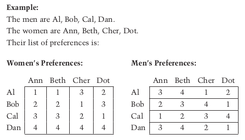
Problem: Given everyone’s preferences, can you propose a matching system for the community?
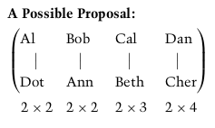
(Man->Woman) x (Woman->Man)
This is indeed a possible proposal, but it is not a good one. Cher is displeased, because she is paired off with her last choice. She can propose to Bob, but she will be turned down because she is his last choice. She will fare no better with Cal, because she is his third choice while he is paired off with his second choice. On the other hand, if Cher proposes to Al, he will be very pleased, because she is his first choice.
The proposal is rejected, because Cher and Al prefer each other to their actual mates, and one can reasonably assume that they will reject the matchmaker’s proposal.
[Gura & Maschler, p3]
Another Possible Proposal: Let us try to pair off all the men with their first choice.
Al’s first choice is Cher.
Bob’s first choice is Dot.
Cal’s first choice is Ann.
Dan’s first choice is Dot.
We see that there is a problem: both Bob and Dan prefer Dot. We can try to pair off Dan with his second choice, Cher, but she is already paired off with Al. Will Dan’s third choice work out? Dan’s third choice is Ann, but she is already paired off with Cal. That leaves Dan with his last choice, Beth.
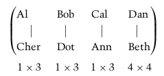
Three of the four men are paired off with their first choice. Do you think this proposal will be accepted or rejected?
Still Another Possible Proposal: Now we shall try to pair off all the women with their first choice. Is it possible?
Ann’s first choice is Al.
Beth’s first choice is Al.
Cher’s first choice is Bob.
Dot’s first choice is Cal.
We see that if we pair off Ann with her first choice, Al, then Beth cannot be paired off with him too. We can pair off Beth with her second choice, Bob, but he is already paired off with Cher. And Beth’s third choice, Cal, is already paired off with Dot. Beth is therefore left with her last choice, Dan.
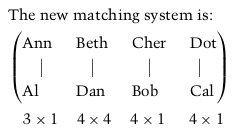
Three of the four women are paired off with their first choice. Will they accept or reject this matching system?
Beth can fight this matching. For example, she can approach Bob and suggest that they both reject this matching and form their own pair. In so doing Beth gets her second choice – better than her fourth choice – and Bob gets his third choice – better than his fourth choice. Thus, the above matching will be rejected by Beth and Bob.
Stable Matching System: A matching system must be such that under it there cannot be found a man and a woman who are not paired off with each other but prefer each other to their actual mates.
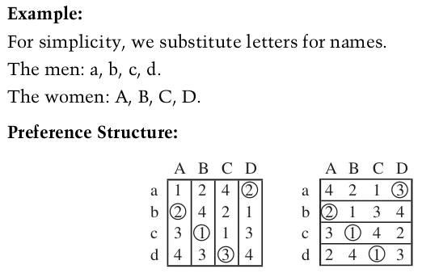
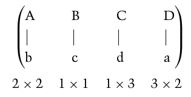
Note: The position of the circles in the two tables must be identical.
Verification: Mr. c and Mr. d are paired off with their first choice, so they need look no further. Mr. b prefers Ms. B to his actual mate, Ms. A, but Ms. B will turn him down because he is her last choice. Mr. a prefers Ms. B and Ms. C to his actual mate, D. If he proposes to B, she will turn him down because he is her second choice and she is paired off with her first choice. If he proposes to C, she too will turn him down because he is her last choice.
Remark: When no man wants to deviate from the matchmaker’s recommendation, then it does not matter if a woman wants to change, because she will not find a man who will agree to cooperate with her. Thus, there is no further need to continue the verification.
Exercise¶
Given the following preference structure of a community of five women and five men:
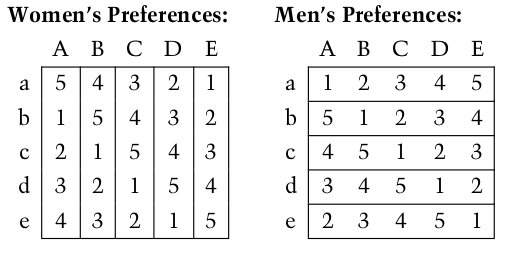
Which of the following matching systems are not stable?
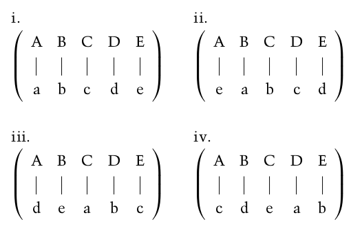
Example¶
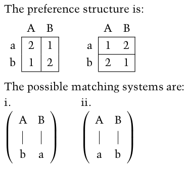
i. This matching system is stable because A and B are paired off with their first choice and therefore will refuse to annul the match.
ii. This matching system is stable, too, because a and b are paired off with their first choice and therefore will refuse to deviate from the matchmaker’s recommendation.
This example shows that if one side (say, the men’s) obtains its first choice, that is, if one side is satisfied with the match, then the other side cannnot undermine the system, however dissatisfied it may be with the match.
A stable matching system is not necessarily a system under which everyone is satisfied. A matching system is stable when no unmatched pair will find it beneficial to deviate from the matching and form their own match. In other words, a stable matching system serves the interests of the matchmaker, whose recommendation will be honored, but it does not necessarily serve the interests of all community members.
Exercise¶
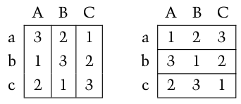
i. The men obtain their first choice: 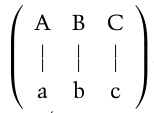
ii. The women obtain their first choice: 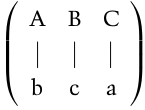
iii. There is also a third stable matching system, where men and women all obtain their second choice: 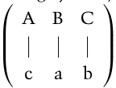
In fact, all those who try to obtain their first choice will be rejected because they themselves are their favorite’s third choice.
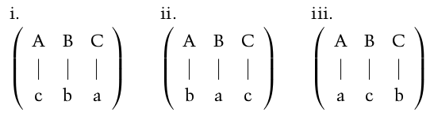
Exercise: The roommate Problem¶
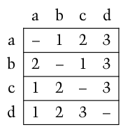
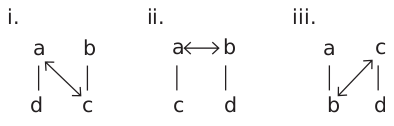
The Gale-Shapley algorithm for finding a stable matching system¶
First Stage: Every man turns to the woman who is first on his list and proposes to her. Every woman who receives more than one proposal selects her favorite from among those who propose to her and tells the others that she will never marry them. Every man who is not rejected is put on a “waiting list” of the woman to whom he proposed.
Second Stage: Every man who was rejected turns to the woman who is second on his list and proposes to her. Every woman who receives more than one proposal, including any proposals from the previous stage, selects her favorite, and puts him on her waiting list. She informs the others that they are rejected.
Third Stage: Every man who is rejected turns to the woman who is next on his list – the second on his list if he was put on the waiting list at a previous stage, or the third on his list if he was rejected twice. Once again, every woman selects her favorite from among those who have proposed to her, including anyone on her waiting list from the previous stage, puts him on the waiting list, and rejects the others. The procedure continues – until such time as no man is rejected. At that stage every man on a waiting list becomes a mate, and the procedure terminates.
Example¶
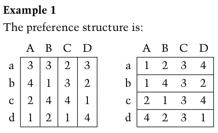
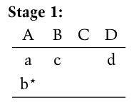 Mr. b, marked with an asterisk (*), is rejected. The others are “waitlisted.”
 Mr. d is rejected (despite having been waitlisted at the previous stage).
Mr. d is rejected (despite having been waitlisted at the previous stage).
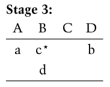 Mr. c is rejected.
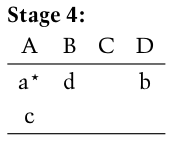 Mr. a is rejected.
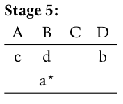 Mr. a is rejected again.
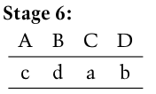
The procedure ends and the proposed matching system is: 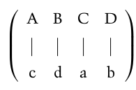
Theorem: For a community of n men & n women, the Gale-Shapley algorithm reaches a stable state at most in \(n^2-2n+2\) stages.
The number of men does not equal the number of women¶
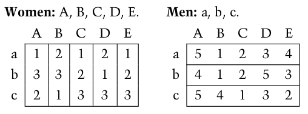
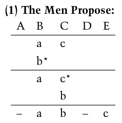
The procedure terminates in the matching system:
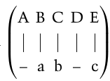
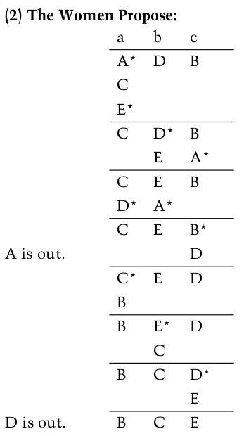
Here again, the procedure terminates in the matching system:
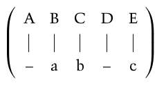
Existence of a preference list that does not include all members of the opposite sex¶
Just set the preference to zero when men/women rather being single than be paired of with certain women/men.
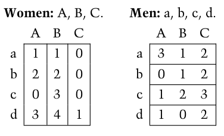
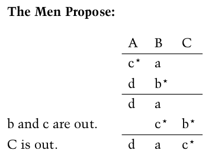
The matching system obtained is:
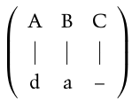
Possible Indifference¶
Just re-order it yourself accordingly! ;)
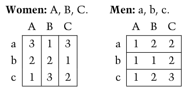
becomes
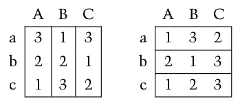
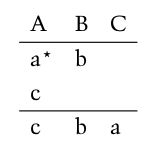
The stable matching system is:
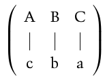
alternatively, if we re-order it like this:
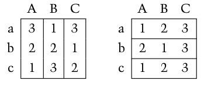
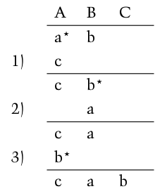
The stable matching system is:
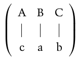
Condition for the existence of a unique stable matching system¶
A system has a unique stable solution if the result of men proposing is the same as the result of women proposing.
Discussion¶
Gale and Shapley were the first to ask whether their algorithm for matching men and women was applicable to the college admissions problem. As they wrote in the conclusion of their paper, “In making the special assumptions needed in order to analyze our problem mathematically, we necessarily moved further away from the original college admissions question, and eventually in discussing the marriage problem, we abandoned reality altogether and entered the world of mathematical make-believe. … It was our opinion, too, however, that some of the ideas introduced here might usefully be applied to certain phases of the admissions problem.”
What Gale and Shapley did not know at the time was that the Association of American Medical Colleges had already for ten years been applying the Gale–Shapley algorithm to the task of assigning interns to hospitals in the United States. By a process of trial and error that spanned over half a century, the Association in 1951 adopted the procedure, later rediscovered by Gale and Shapley, that was hospital-optimal. A detailed description of this procedure can be found in Two-Sided Matching by A. E. Roth and M. Sotomayor. The book contains many extensions that evolved after the appearance of the paper by Gale and Shapley.
[Gura & Maschler, p56]
References¶
(mostly “directly copied from”) Ein-Ya Gura & Michael B. Maschler, “Insights Into Game Theory”, Cambridge Uni. Press, 2008. ISBN 978-0-511-45538-4
Economic Sciences Nobel Prize 2012:
“for the theory of stable allocations and the practice of market design.”